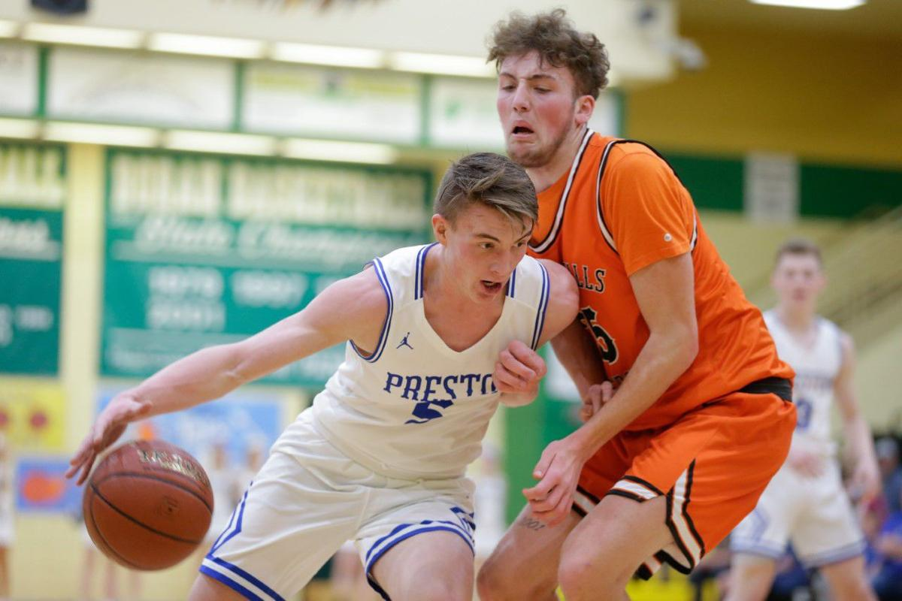

Preston
Weather Summary
Currently:
High: °F
Windchill: °F
Humidity: %
Wind Speed: mph
|
°F
|
°F
|
°F
|
°F
|
°F
|
Upcoming Events:
'Take it back': Preston wins state title rematch, 58-47, over Idaho Falls in 4A first round

BOISE — Preston’s motto this week is “take it back,” and the Indians took their first step to doing so Thursday.
Preston never trailed, led by as many as 21 points and beat defending 4A state champion Idaho Falls 58-47 at Borah High School in the first round of the 4A state tournament — the Indians’ 20th win in a row.
It was a rematch of last year’s 4A state title game, when I.F. ended the Indians’ three-year reign as state champs.
“We were ready,” said Preston senior Ty Hyde, who racked up 26 points and 14 rebounds. “Fate got us where we got a shot at them the first round, and we were pumped.”
Preston (24-1) went on runs of 6-0 and 9-0 to open the game and led 21-11 after the first quarter. The Indians got out in transition following misses by Idaho Falls and worked the ball around I.F.’s zone defense to find the 6-foot-7 Hyde on the block, cutters off the wing or shooters at the 3-point line. The same formula allowed Preston’s lead to grow to 16 points in the second. Hyde finished the half with 16 points as the Indians made 15 of 25 shots from the field (60%) and led 35-23. “We were sharing the ball,” Hyde said. “Luke (Smellie) did a great job setting it up, and the guys were just sharing it and that’s when we play our best. ... We started hurting them inside, and then when we went inside, we started kicking it out and guys were hitting shots.” Idaho Falls (19-7) regrouped in the second half, triple-teaming Hyde in the post at times and trying to slow the Indians down with a press. Sometimes, it worked. The Indians got sloppy in the fourth quarter, when they scored six points, committed four turnovers and went 0 for 2 at the free-throw line. I.F. outscored the Indians 13-6 in the frame, earning multiple chances to cut Preston’s 11-point lead to single digits in the final few minutes. But the Tigers never got any closer.
Coach Howard Hart pointed to Preston’s hot start, rebounding edge (38-26) and array of scorers as strengths his team could not overcome. “Whatever we thought we could do, we pretty much had to scrap after the first quarter and re-adjust and kind of go on the fly for a minute,” Hart said. “The zone worked pretty well for a minute. The pressure at least created a different tempo for the game. In the end, they still were the better team, so congratulations to them.”
Scott Dunn was Preston’s next-highest scorer with nine points. Cooper Hobson added eight off the bench. Smellie filled the stat sheet, piling up seven points, 11 rebounds, nine assists and one block. Keynion Clark led Idaho Falls with 14 points and six rebounds. Ryan Farnsworth added 10 points. The Tigers shot 36.4% from the floor, compared to 48% for the Indians.
Up next:
Preston faces Middleton at 6:15 p.m. Friday in the state semifinals. Middleton handed Preston its only loss this season, 62-53, on Dec. 13 in Preston. “Going to be a battle,” Preston coach Tyler Jones said. “Two really good teams, and we’re similar in a lot of ways. They have the big kid (Tyler) Robinett, and their guards can shoot.” Preston, which was ranked No. 1 in the final media poll of the season, has to beat the No. 3 team (Idaho Falls) and No. 2 team (Middleton) to make it back to the state title game. “If you want to be the best, you’ve got to beat the best teams,” Jones said “Tomorrow night we have that opportunity and that’s all you can ask for.” Idaho Falls faces Bishop Kelly at 1:15 p.m. in the consolation bracket. “We’ve got to go find a way to go play again tomorrow,” Hart said. “You’d like to advance on the right side (of the bracket), but we still have basketball to play, so what are you made of and will you get after it? That’s our challenge now.”